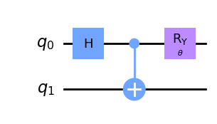

import numpy as np
from qiskit import QuantumCircuit
from qiskit.circuit import Parameter
from qiskit.quantum_info import SparsePauliOp
from qiskit_ibm_runtime import QiskitRuntimeService, Estimator, Session
import matplotlib.pyplot as plt
import matplotlib.ticker as tckIt’s an experiment on a quantum computer to demonstrate the violation of the CHSH inequality with the Estimator primitive.
The violation of the CHSH inequality is used to show that quantum mechanics is incompatible with local hidden-variable theories. This is an important experiment for understanding the foundation of quantum mechanics. The 2022 Nobel Prize for Physics was awarded to Alain Aspect, John Clauser and Anton Zeilinger for their pioneering work in quantum information science, and in particular, their experiments with entangled photons demonstrating violation of Bell’s inequalities. An experimental method by which one can test Bell’s inequality was put forth by Clauser, Horne, Shimony, and Holt (CHSH) in 1969, and forms the basis for the experiment conducted here.
CHSH Inequality
Imagine Alice and Bob are given each one part of a bipartite entangled system. Each of them then performs two measurements on their part in two different bases. Let’s call Alice’s bases A and a and Bob’s B and b. What is the expectation value of the quantity
\[ \langle CHSH \rangle = \langle AB \rangle - \langle Ab \rangle + \langle aB \rangle + \langle ab \rangle ? \]
Now, Alice and Bob have one qubit each, so any measurement they perform on their system (qubit) can only yield one of two possible outcomes: +1 or -1. Note that whereas we typically refer to the two qubit states as \(|0\rangle\) and \(|1\rangle\), these are eigenstates, and a projective measurement will yield their eigenvalues, +1 and -1, respectively.
Therefore, if any measurement of A, a, B, and b can only yield \(\pm 1\), the quantities \((B-b)\) and \((B+b)\) can only be 0 or \(\pm 2\). And thus, the quantity \(A(B-b) + a(B+b)\) can only be either +2 or -2, which means that there should be a bound for the expectation value of the quantity we have called
\[ |\langle CHSH \rangle| = |\langle AB \rangle - \langle Ab \rangle + \langle aB \rangle + \langle ab \rangle| \le 2. \]
Create Entangled Qubit Pair
Next we want to test the \(CHSH\) observable on an entangled pair, for example the maximally-entangled Bell state \[
|\Phi\rangle = \frac{1}{\sqrt{2}} \left(|00\rangle + |11\rangle \right)
\] which is created with a Hadamard gate followed by a CNOT with the target on the same qubit as the Hadamard. Due to the simplifaction of measuring in just the \(X\)- and \(Z\)-bases as discussed above, we will rotate the Bell state around the Bloch sphere which is equivalant to changing the measurement basis. This can be done by applying an \(R_y(\theta)\) gate where \(\theta\) is a Parameter to be specified at the Estimator API call. This produces the state \[
|\psi\rangle = \frac{1}{\sqrt{2}} \left(\cos(\theta/2) |00\rangle + \sin(\theta/2)|11\rangle \right)
\]
theta = Parameter("$\\theta$")
chsh_circuits_no_meas = QuantumCircuit(2)
chsh_circuits_no_meas.h(0)
chsh_circuits_no_meas.cx(0, 1)
chsh_circuits_no_meas.ry(theta, 0)
chsh_circuits_no_meas.draw("mpl")
Next we need to specify a Sequence of Parameters that show a clear violation of the CHSH Inequality, namely \[
|\langle CHSH \rangle| > 2.
\]
We will analyze the results and plot them against the measurement angle and will see that for certain range of measurement angles, the expectation values of CHSH quantities or, which demonstrates the violation of the CHSH inequality.
number_of_phases = 21
phases = np.linspace(0, 2 * np.pi, number_of_phases)
# Phases need to be expressed as list of lists in order to work
individual_phases = [[ph] for ph in phases]service = QiskitRuntimeService()
backend="ibmq_qasm_simulator" #service.get_backend("ibmq_manila")ZZ = SparsePauliOp.from_list([("ZZ", 1)])
ZX = SparsePauliOp.from_list([("ZX", 1)])
XZ = SparsePauliOp.from_list([("XZ", 1)])
XX = SparsePauliOp.from_list([("XX", 1)])
ops = [ZZ, ZX, XZ, XX]
chsh_est = []
# Simulator
with Session(backend=backend):
estimator = Estimator()
for op in ops:
job = estimator.run(
circuits=[chsh_circuits_no_meas] * len(individual_phases),
observables=[op] * len(individual_phases),
parameter_values=individual_phases,
)
est_result = job.result()
chsh_est.append(est_result)# <CHSH1> = <AB> - <Ab> + <aB> + <ab>
chsh1_est = chsh_est[0].values - chsh_est[1].values + chsh_est[2].values + chsh_est[3].values
# <CHSH2> = <AB> + <Ab> - <aB> + <ab>
chsh2_est = chsh_est[0].values + chsh_est[1].values - chsh_est[2].values + chsh_est[3].valueschsh1_estarray([ 2. , 1.2535, 0.4515, -0.437 , -1.2705, -2.0035, -2.504 ,
-2.8055, -2.79 , -2.5305, -1.9595, -1.3045, -0.456 , 0.45 ,
1.2835, 2.0445, 2.4955, 2.8115, 2.7665, 2.5245, 2.046 ])chsh2_estarray([ 2. , 2.5435, 2.8155, 2.806 , 2.5455, 1.9965, 1.303 ,
0.4495, -0.458 , -1.2915, -2.0405, -2.4915, -2.753 , -2.801 ,
-2.5375, -1.9555, -1.2975, -0.4335, 0.4305, 1.2725, 1.954 ])fig, ax = plt.subplots(figsize=(10, 6))
# results from hardware
ax.plot(phases / np.pi, chsh1_est, "o-", label="CHSH1", zorder=3)
ax.plot(phases / np.pi, chsh2_est, "o-", label="CHSH2", zorder=3)
# classical bound +-2
ax.axhline(y=2, color="0.9", linestyle="--", )
ax.axhline(y=-2, color="0.9", linestyle="--")
# quantum bound, +-2√2
ax.axhline(y=np.sqrt(2) * 2, color="0.9", linestyle="-.")
ax.axhline(y=-np.sqrt(2) * 2, color="0.9", linestyle="-.")
ax.fill_between(phases / np.pi, 2, 2 * np.sqrt(2), color="0.6", alpha=0.7)
ax.fill_between(phases / np.pi, -2, -2 * np.sqrt(2), color="0.6", alpha=0.7)
# set x tick labels to the unit of pi
ax.xaxis.set_major_formatter(tck.FormatStrFormatter("%g $\pi$"))
ax.xaxis.set_major_locator(tck.MultipleLocator(base=0.5))
# set title, labels, and legend
plt.title("Violation of CHSH Inequality")
plt.xlabel("Theta")
plt.ylabel("CHSH witness")
plt.legend();